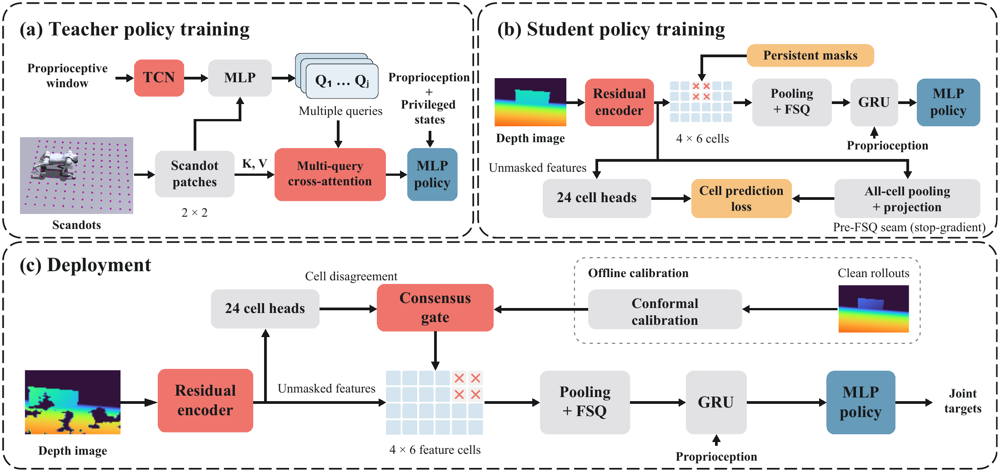
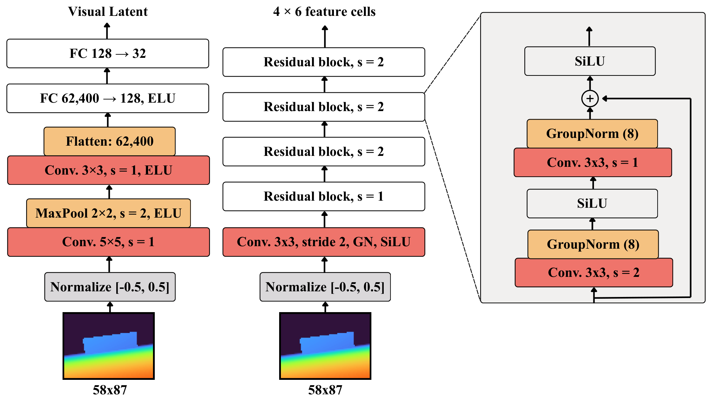
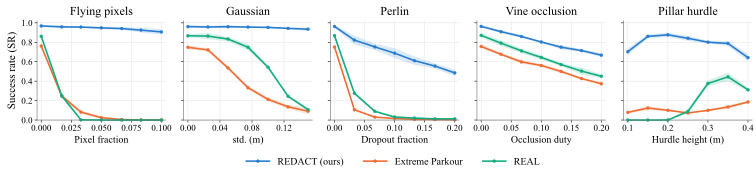

(a) Teacher training
Regularized multi-query attention structures the privileged teacher’s terrain representation to support learning from onboard depth.
University of Southampton
Depth-conditioned locomotion policies have demonstrated impressive agile maneuvers, but can produce unpredictable actions when observations fall outside their training distribution. Occlusion, invalid returns, sensor noise, and visual distractors can shift deployment observations away from nominal simulated depth. While synthetic sensor augmentation targets specified degradations, it does not by itself define behavior under corruption families omitted from training. To address gaps in training-time coverage, we present REDACT (Retaining Evidence Despite Artifacts for Continued Traversal), a teacher–student framework combining an improved visual encoder architecture, persistent feature masking, and a novel consensus-gating algorithm to retain useful depth information under unmodeled corruption. The gate uses approximate conformal calibration on clean observations alone, requiring no prior knowledge of the corruption type. Trained on clean simulated depth, REDACT retains useful visual information under unseen corruption, supporting higher traversal success than existing parkour baselines. Evaluation of depth augmentation across corruption families further shows that REDACT improves robustness where augmentation coverage is missing. Real-world trials demonstrate zero-shot transfer to structured and forested environments with unfamiliar scene content.
Method, controlled comparisons, and real-world trials.
Teacher training, student learning, and consensus-gated deployment.

Regularized multi-query attention structures the privileged teacher’s terrain representation to support learning from onboard depth.
A residual encoder preserves spatial features. Cell predictions share a common target, while persistent masking prepares the recurrent policy to use partial visual evidence.
Clean-calibrated thresholds reject inconsistent features before pooling. Recurrent memory helps retain useful terrain information for continued control.
The encoder is designed to preserve useful terrain structure while limiting how visual corruption changes the representation supplied to the policy.

Comparisons in simulation and zero-shot transfer to real terrain.
Trained without depth-image augmentation, REDACT maintains higher traversal success than REAL [1] and Extreme Parkour [2] across the tested corruption sweeps. The advantage also extends to pillar hurdles, where unfamiliar geometry changes the visual scene without changing the required maneuver.

Training on one corruption type does not ensure robustness to others. Augmentation transfers unevenly across the ConvNet baselines, while REDACT retains stronger performance on corruption types absent from training. Targeted augmentation can further improve REDACT, highlighting complementary benefits from encoder design and training coverage.
Baseline comparisons, a controlled gating ablation, and real-world transfer.
Both REDACT and REAL [1] were trained on clean simulated depth, without depth-image augmentation. Neither policy was trained on the Perlin dropout or flying-pixel noise shown here; the adjacent pillars were also absent from training.
Spatially structured depth dropout removes parts of the observed terrain.
Flying-pixel corruption introduces erroneous depth values. Neither policy was trained on this noise type.
Pillars introduce unfamiliar visual geometry beside the hurdle while leaving the required maneuver unchanged. Neither policy was trained with these pillars.
The same REDACT policy with gating disabled and enabled isolates its contribution under visual occlusion. With gating, recurrent memory can retain useful earlier terrain information while inconsistent current features are removed.
Zero-shot deployment introduces vegetation, unfamiliar scene content, and depth dropouts without additional training in the deployment environment.
Clips illustrate individual trials. Aggregate results, evaluation protocols, and failure cases are reported in the paper.
Architecture settings and the offline calibration procedure.
Settings reported in the current manuscript. Calibration is approximate and is performed offline using clean observations.
| Setting | Value / procedure |
|---|---|
| Teacher attention queries | 4 |
| Query/key dimension | 64 |
| Teacher terrain latent dimension | 32 |
| Student spatial feature grid | 4 × 6 cells |
| Finite scalar quantization | 5 levels per latent coordinate |
| Calibration observations | Clean rollouts; frozen student; gating disabled |
| Calibration sampling | One frame per episode; approximately 3,500 episodes |
| Cell thresholds | Empirical 99th percentile with linear interpolation |
| Gate fallback | If fewer than 6 cells remain, retain the 18 lowest-scoring cells |
{kind=link}